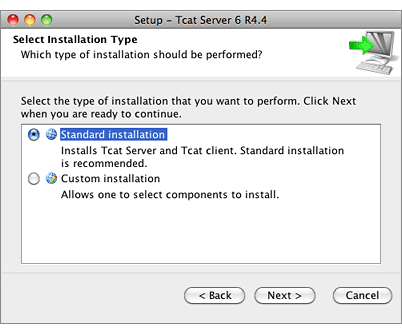
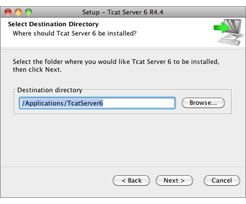
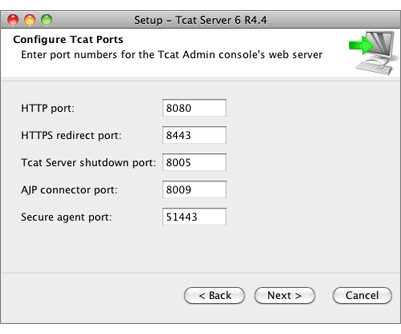
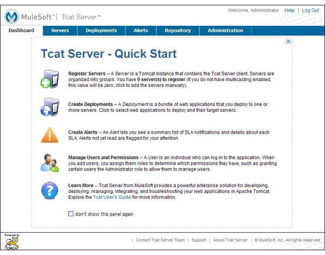

Installing Tcat Server on Mac OS X
This document describes how to install MuleSoft Tcat Server on Apple’s Mac OS X operating system. A basic installation using the Mac installer is described below.
Note: The Mac OS X version of Tcat Server does not currently include remote server restarts and Mac OS-specific service integration.
For additional information and to install Tcat Server on other operating systems, see:
Send comments or questions to: tcat-install
Mac OS X Operating Systems Supported
Tcat Server has been tested and is supported on the following Mac OS X versions:
-
Leopard (version 10.5.8)
-
Snow Leopard (version 10.6)
For additional operating systems supported, see installation documentation on: Linux, Solaris, and Microsoft Windows.
Required Software
Tcat Server operates within a Java Viurtual Machine (JVM) and requires the Java SE Runtime Environment (JRE). However, it is strongly recommended that you install the Java SE Developers Kit (JDK). JDK includes JRE and provides for additional utilities.
JRE and JDK Versions Supported
JDK or JRE version 1.6.x is required to run both Tcat agent and the Tcat console. JDK or JRE version 1.5.x is also supported for Tcat agent only; the 1.5.x versions does not work with the Tcat console.
Tcat Server has been tested with the bundled JRE included with Mac OS X Leopard and Mac OS X Snow Leopard. It may be necessary to update your Java version through the Software Update option.
Installing Tcat Server
You need to know the default credentials to access the Tcat Server dashboard once installation is complete. Both the username and password default to admin as detailed below.
Download Tcat Server for Mac OS X
Install Tcat Server from Tcat - Enterprise Solution for Apache Tomcat and click the Download button.
Installation with the Mac OS X Installer
Follow these steps for a Tcat Server installation using the Mac OS X installer. All defaults may be chosen for an initial installation. However, custom ports, installation directory and a service instance name can be customized by changing the defaults as shown below. Later, when installing additional Tcat Server instance on one or more remote computers, the Tcat console need not be installed.
-
Run the installer by opening the .dmg file that was saved to your computer in the step above. The welcome screen opens in a few moments, click Next and accept the license agreement.
-
Choose a Standard Installation to install both Tcat Server and the Tcat console.
-
Choose Custom Installation if you wish to only install Tcat Server on a remote computer that’s administered by your primary installation. You can also choose to optionally install Apache Tomcat documentation.
 -
Choose the installation directory:
 -
Configure ports. Ports can also be later changed in the
conf/server.xmlandconf/Catalina/localhost/agent.propertiesfiles located in the destination directory specified above.The installation starts and takes several minutes to complete.
-
Start Tcat Server: open a Terminal window and navigate to the bin directory where Tcat Server was installed. Then enter: ./startup.sh
-
Open a web browser and navigate to: http://localhost:8080/console
-
Log in with admin for both the username and password.
The Tcat Server dashboard launches in your web browser.

| Your next steps after launching the Tcat dashboard include registering a server in the console, and then adding a new web application to the server instance. See Working with Servers for additional steps in these procedures. |
Upgrade Installation
If you are upgrading from a previous release of Tcat Server, see Upgrading to Tcat Server 6 R4 and follow the upgrade instructions provided in this document.
Adding Tcat Server Capabilities to an Existing Apache Tomcat Installation
Tcat Server capabilities can be added to an existing Apache Tomcat installation. All Tomcat 5.5.x and higher releases, and all Tomcat 6.0.x and 7.0.x releases are supported. Reference Add Tcat Server Capabilities to an Existing Tomcat Install for installation instructions.
Installing Multiple Tcat Instances on a Single Computer
Multiple instances of Tcat Server can be run on a single machine. One instance (or more) of the Tcat console allows users to manage all the additional Tcat Server instances, each running in their own Java Virtual Machine (JVM). For more information, see Installing Multiple Tcat Instances on a Single Machine.
Starting and Stopping Tcat Server
Navigate to the Tomcat bin directory and enter the following command at the terminal prompt:
./startup.sh
To stop a Tcat Server instance, enter the following command:
./shutdown.sh
As a next step, you may wish to start the Tcat console as detailed in the following section.
Starting the Tcat Console
The Tcat console is an administration console for managing and monitoring Tomcat instances. To run the Tcat console on a local installation, enter http://localhost:8080/console in your web browser. If the server is remote or you changed the default port, replace localhost:8080 with the correct server name and port where the console is deployed.
You can now select and register one or more of the unregistered servers, adding them to server groups as needed. For more details, see Working with Servers.
Uninstalling Tcat Server
The following options uninstall Tcat Server:
-
For a Tcat Server installation via the Mac OS X installer, choose Tcat Server 6 Uninstaller from the TcatServer6 folder in Applications.
-
If Tcat Server and Tomcat were manually installed in the same directory, and you want to delete both programs, simply delete the entire folder.
-
If Tcat Server was manually installed on an existing Tomcat installation, delete the console, agent webapps, and their folders from the webapps directory.